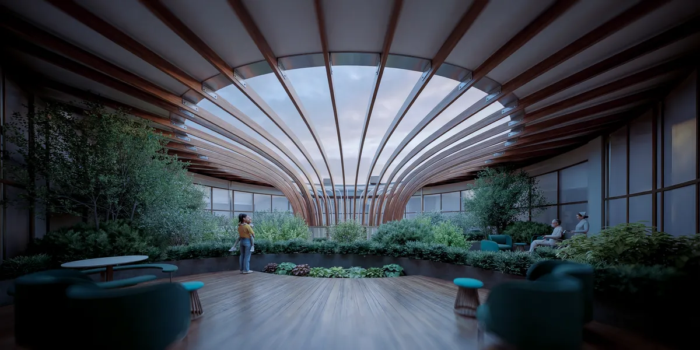
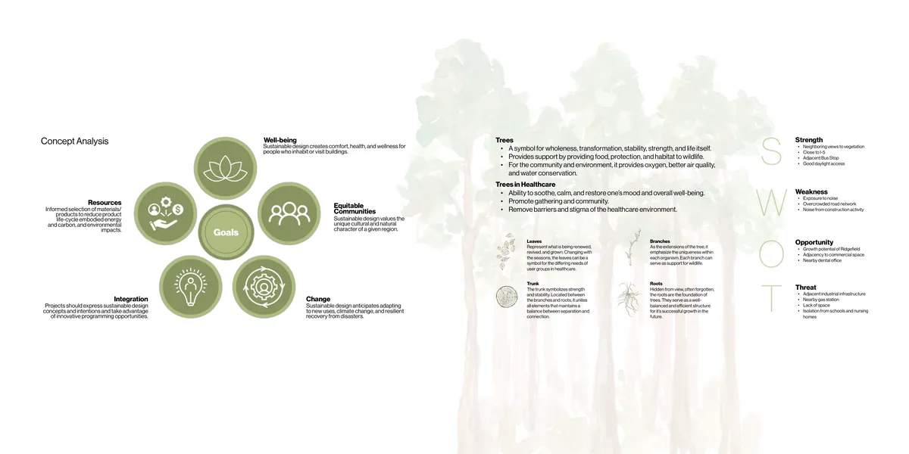
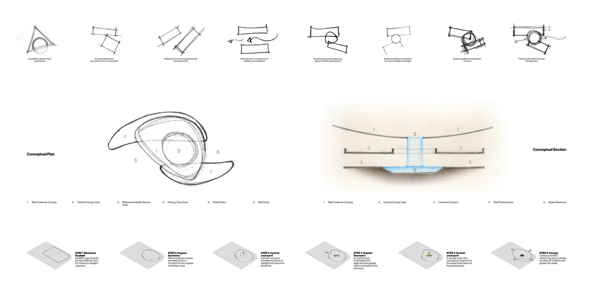
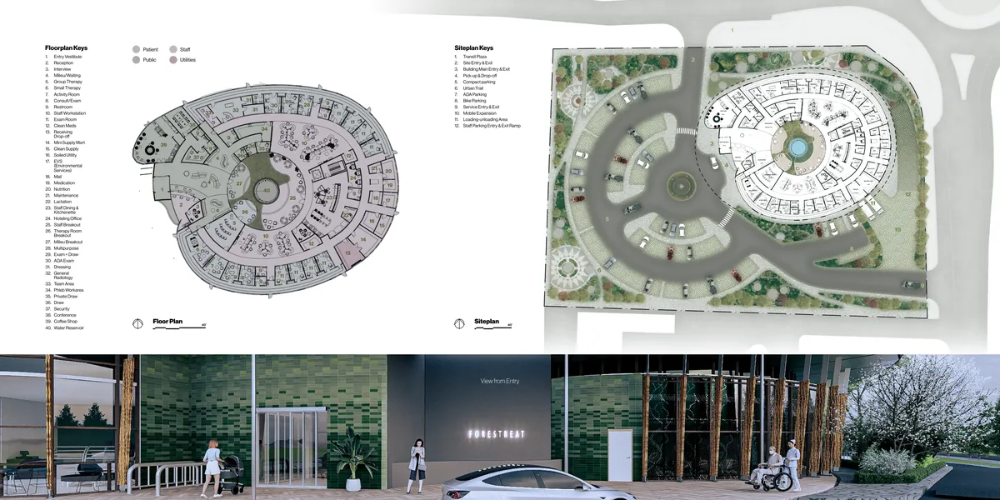
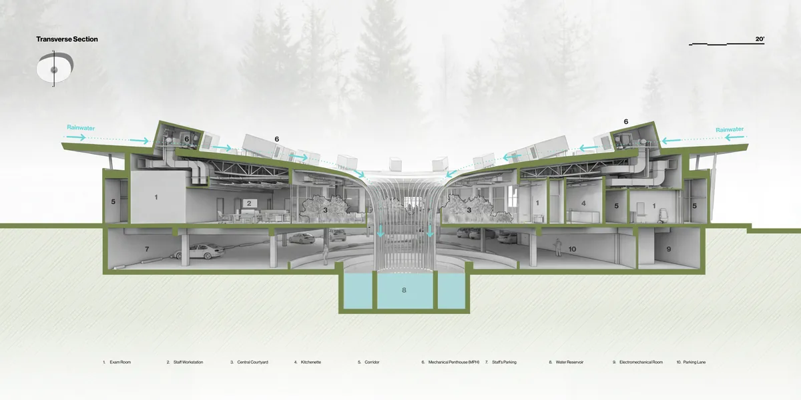
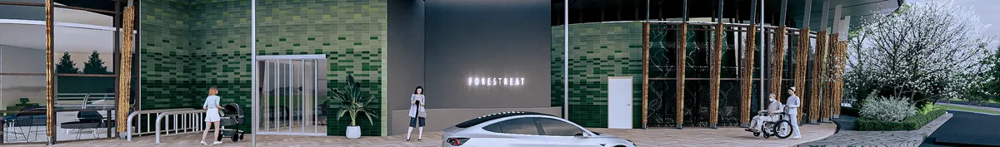

04 / 05
Forestreat
Relaxation and well-being through nature
Forestreat draws on shinrin-yoku, the Japanese practice of forest bathing, to design an integrated primary care and behavioral health clinic. Trees soothe and restore, and here they also help remove the stigma of the healthcare setting.
A circular plan wraps a central courtyard. Radial services create gathering points for patients and community, and a canopy collects rainwater and channels it through a void to a reservoir below.
Concept
Leaves, branches, trunk and roots become a framework for the building's goals: well-being, equitable community, resources, change and integration.

Form
A south-facing bar for daylight is curved into an organic form, opened by a central courtyard and an inviting void at the entry, then shaded by the rain-collecting canopy.

Plan and site

Section
Rainwater runs from the canopy through the courtyard void to a reservoir at the staff parking level.

